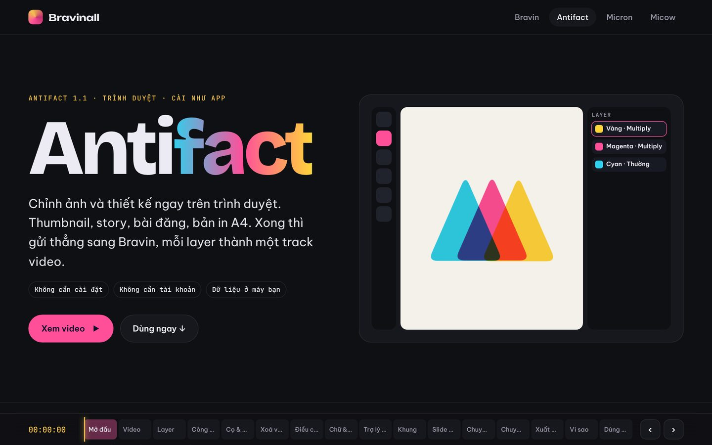
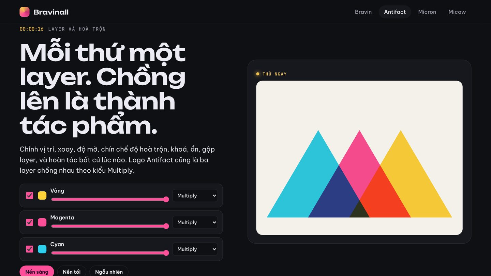
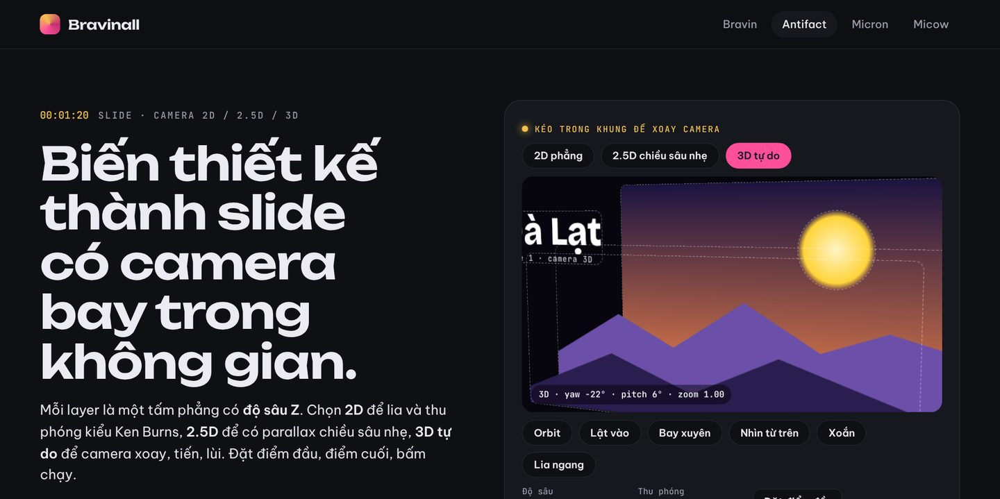
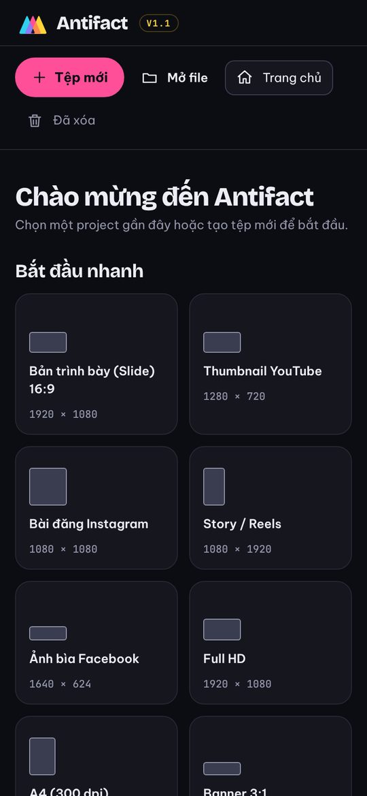

Phạm Việt Hà
Phạm Việt HàMục lục
Antifact là ứng dụng thiết kế thứ hai trong hệ sinh thái Bravinall của Phạm Việt Hà. Antifact chỉnh ảnh và thiết kế ngay trên trình duyệt: thumbnail, story, bài đăng, bản in A4. Không cần cài đặt, không cần tài khoản, dữ liệu nằm trên máy bạn.

Mỗi thứ một layer
Antifact làm việc theo layer: chỉnh vị trí, xoay, độ mờ, chín chế độ hoà trộn, khoá, ẩn, gộp layer, và hoàn tác bất cứ lúc nào. Chính logo Antifact cũng là ba layer chồng nhau theo kiểu Multiply.

26 công cụ chọn, vẽ và sửa ảnh
- Chọn vùng, chữ, hình, chuyển màu, cọ, tẩy.
- Sửa ảnh như phần mềm chuyên nghiệp: Clone Stamp, Healing, Dodge, Burn, Liquify.
- Năm loại cọ, có cảm biến lực bút trên máy tính bảng.
- Khoanh vùng bằng Lasso rồi xoá vật thể bằng content-aware fill.
Chỉnh màu không phá ảnh gốc
Mười layer điều chỉnh đặt chồng lên ảnh: Levels, Curves, Hue/Saturation, Color Balance, Exposure, nhiệt độ màu. Tắt đi là ảnh về như cũ. Kèm tám bộ lọc một chạm.
Tám khung có sẵn
Từ bản trình bày 16:9, thumbnail YouTube, bài Instagram, Story, ảnh bìa Facebook, banner đến bản in A4. Chọn khung là Antifact mở đúng kích thước.
Slide có camera bay trong không gian
Mỗi layer là một tấm phẳng có độ sâu Z. Chọn 2D để lia và thu phóng kiểu Ken Burns, 2.5D cho parallax nhẹ, 3D tự do cho camera xoay, tiến, lùi. Mười hai kiểu xuất hiện, sáu kiểu chuyển động lặp, nối nhiều slide thành bài trình chiếu.

Trợ lý AI
"Làm tiêu đề to hơn", "đổi nền xanh đậm": trợ lý tự thêm, sửa, sắp xếp layer ngay trên thiết kế. AI là của bạn: Claude, OpenAI, hoặc Ollama, LM Studio chạy trên máy.
Một cú thả sang Bravin
Xuất PNG trong suốt, JPG, WebP, video MP4 hoặc GIF. Hoặc bấm Gửi sang Bravin: mỗi layer thành một track video, đúng vị trí, đúng thứ tự. Nhờ vậy, thiết kế xong không phải ghép lại từ đầu trong phần mềm dựng.

 Mở AntifactThiết kế ngay trên trình duyệt
Mở AntifactThiết kế ngay trên trình duyệt
 Đọc thêmBravin: trình dựng video Phạm Việt Hà xây, chạy trên web, Android và Windows
Đọc thêmBravin: trình dựng video Phạm Việt Hà xây, chạy trên web, Android và Windows